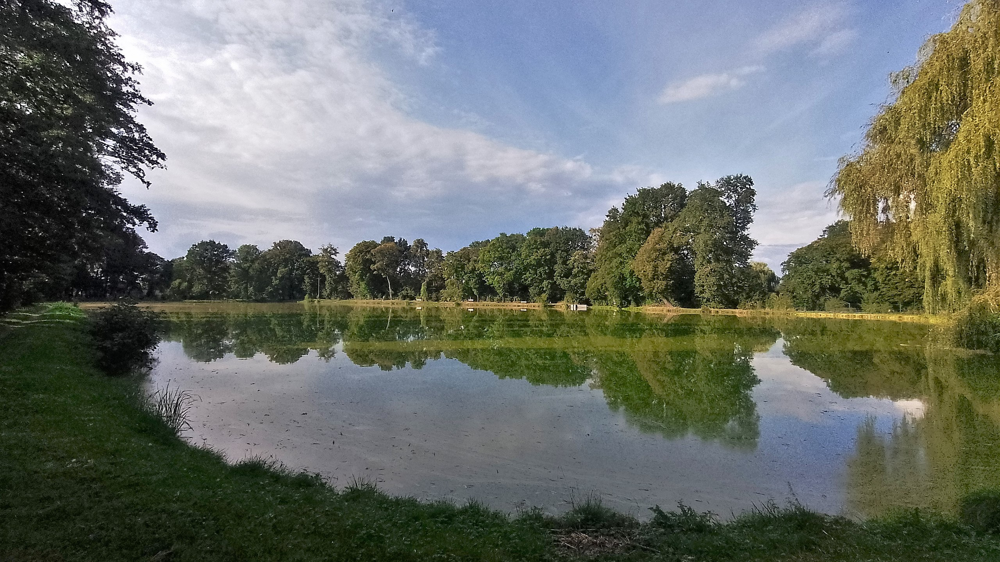

Pałac w Tworkowie to ruiny okazałej budowli stojące w północnej części miejscowości, dawniej siedziba Tworkowskich, Wodników i Reiswitzów. Początki zamku gotyckiego sięgają XIV wieku, a w XVI wieku został rozbudowany przez Kaspra Wiskota von Wodnik, a w XIX wieku przebudowany w stylu neogotyckim. Pałac został zniszczony w czasie II wojny światowej, lecz w ostatnich latach zrewitalizowano mury i udostępniono wieżę zamkową jako punkt widokowy. Pałac dostępny jest przez cały rok, bezpłatnie.
Kościół Św. Piotra i Pawła w Tworkowie to barokowa perła z końca XVII wieku, stojąca w miejscu wcześniejszej drewnianej świątyni. Kościół ten jest niezwykle cenny, gdyż w jego podziemiach odkryto rodową kryptę Reiswitzów z trumnami pochodzącymi z 1650 roku. Dziś są one prezentowane w kościele, pod bardzo ciekawą i unikatową lożą rodziny Reiswitzów, bogato zdobioną. Całe wnętrze kościoła jest barokowe i niezwykle zdobne. Kościół otacza cmentarz.
Aleja Hroza to historyczny trakt wiodący z Tworkowie do Bieńkowic, z pięknym starodrzewem, obecnie to ścieżka piesza i rowerowa.
Staw Trzeciok znajduje się za parkiem pałacowym, przy Alei Hroza. Jest to malowniczy staw nad którym stoi Zabytkowy Młyn, już nieużytkowany.
Kapliczka Św. Urbana to zabytkowa, późnobarokowa kapliczka z 1779 roku, z później dobudowaną wieżyczką. Znajduje się około 2 km na zachód od Tworkowa.